DX0JP 2007

Pag-Asa, Spratly Is
03-11.Feb.2007
DX0JP(Pag Asa, Philippin Spratly Island)QRV
|
2007年2月4日から2月11日にかけて南シナ海のPhilippin Spratly Island(Pag-Asa Is)からDX0JPの運用が行われた。 メンバーは日本から参加したFEDXPのメンバー等5人(JA1BRK,JA1RJU,JF1IST,JF2XGF,JA4DND)と、 フィリピンのPARA (Philippine Amateur Radio Association)から参加したDU1BAの計6人。 今回のDX0JPのDX-Peditionの目的は160m、80m、40mのHF帯のローバンドと6m、2mのEMEの運用がメインとなっていた。 フィリピンのマニラからSpratly Island(Pag-Asa Is)までの距離は直線で約903Km(579miles)だが、 最短距離のコースで島に向かうには小型クルーザー(KARL LANCE STEPHEN号)では燃料の関係で無理なため、 途中の本土側のパラワン(Palawan)島北部のリミナンコン(Liminancong)港で一度給油した後、 目的地のSpratly IslandのPag-Asa島に向かうルートに決定した。片道の行程は2日間を予定。 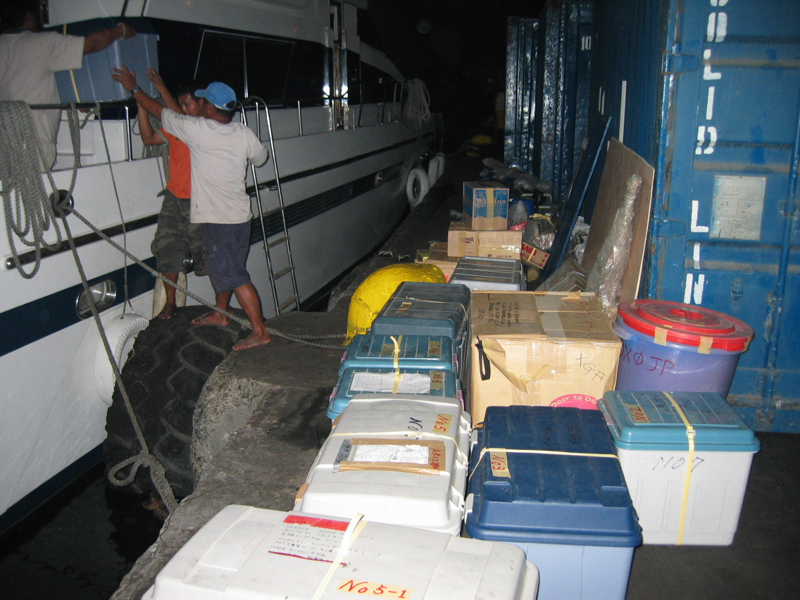 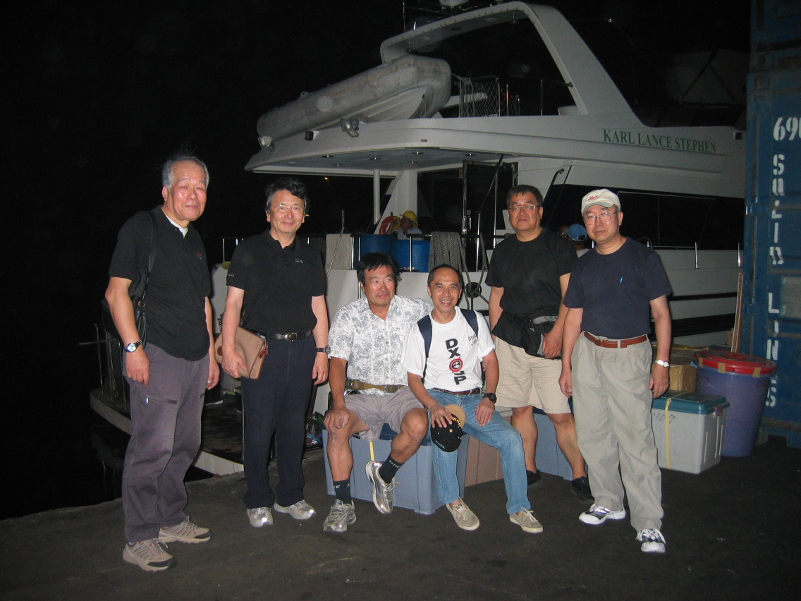 マニラ港でKARL LANCE STEPHEN号に積み込む荷物の山(左) 荷揚も無事終わり一息付くメンバー 左からJA1RJU.JA1BRK.JF1IST.DU1BA.JF2XGF.JA4DNDの各局 [マニラ出港] メンバー6人全員と機材を満載した小型クルーザーは2月1日の深夜(0100LMT)にマニラ港を出港した。 マニラを出港した船はミンドロ(Mindoro)島沖を島沿いに南下、 船はパラワン(Palawan)島の北部の港・リミナンコン(Liminancong)で給油後に、 Spratly諸島のPag-Asa Islandに向かう。 マニラを発って約16時間後の同日の夕方17:30LMTにリミナンコン港(海路約500Km)に到着した。 リミナンコン港のあるパラワン島はSpratly Isに最も近い島だが、ここからでも目的地までは最短距離で約550kmある。 マニラからリミナンコン間は陸地に近い沿岸沿いの移動だったため、 船の揺れはそれほど激しいものではなかったが、既に船酔い状態が出始めたメンバーもいた。 これから向かうSpratly(Pag-Asa)Isまでは、外洋に出て冬の北西の風に向かって進む事になるため、 より激しい船の揺れは覚悟しなければならない。 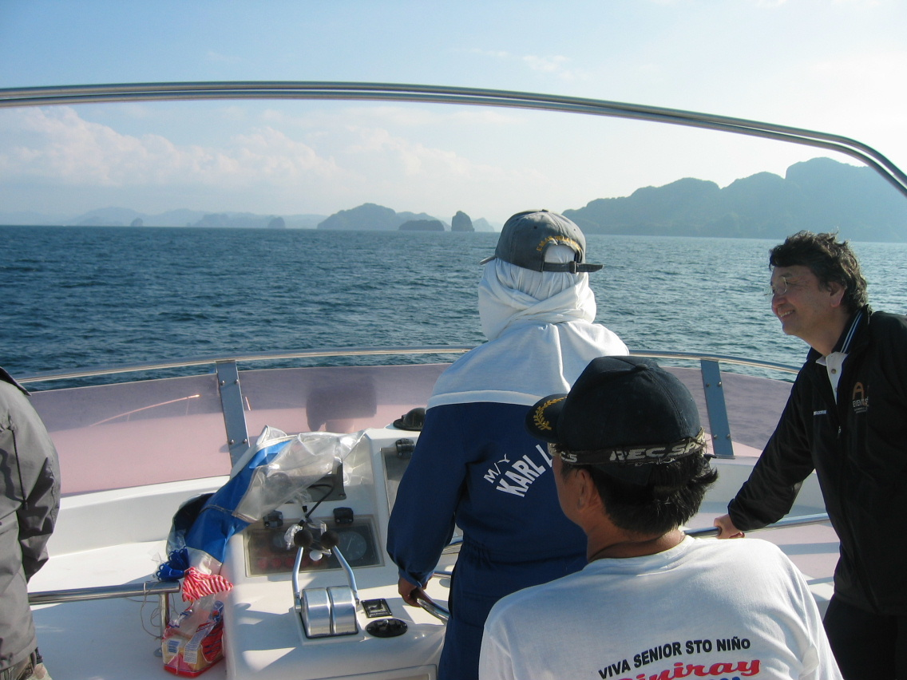 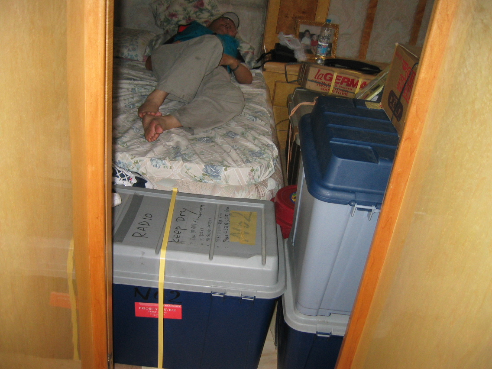 マニラを出発して16時間後に給油のためリミナンコン港に到着。 2つある客室のベッド周りに詰め込まれた機材。寝ているのはJA4DND(左) この港から乗り込んだ"水先案内人"のカモ(Camo)氏と船長が検討した結果、 Pag-Asa Isへの到着時間が朝になるように、リミナンコン港を出港する事になった。 現地到着を2/3日の午前0800時を予定し、出発は2/2日の午前1000時に決まった。 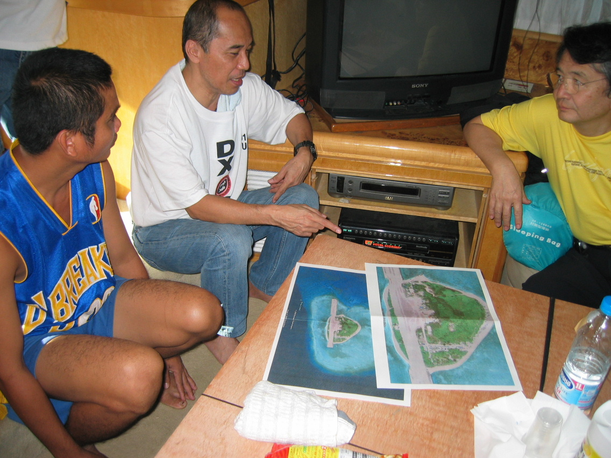 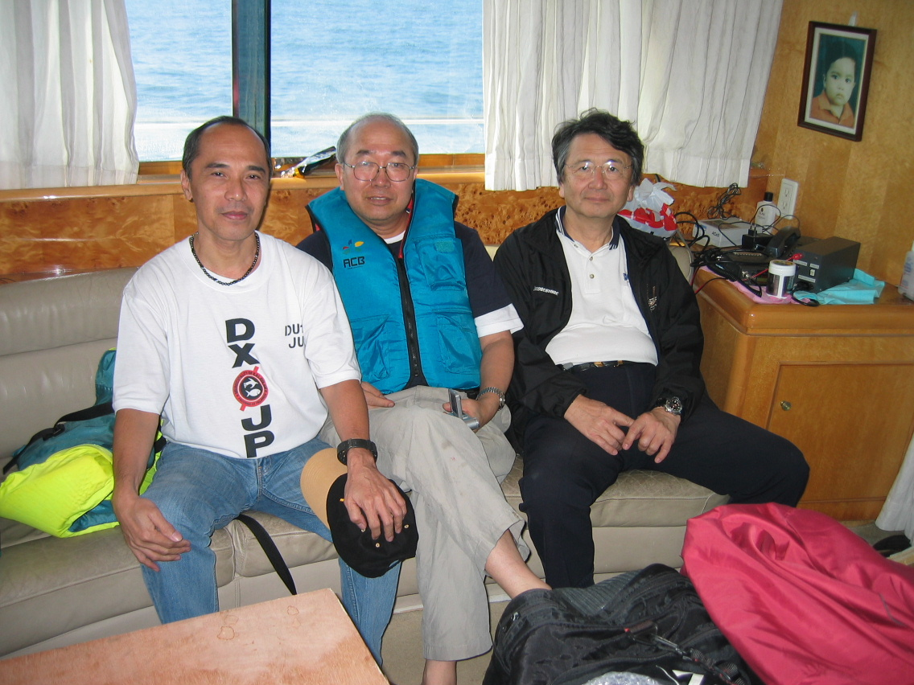 水先案内人Camo氏を交えて"海路"を確認するメンバー 外洋に出る前はまだメンバーにも笑顔が...。 左からDU1BA(Jun),JA4DND(Hiro),JA1BRK(Tac) [苦行の始まり] 2/2日朝、予定通り船はSpratly(Pag-Asa)Isに向けリミナンコン(Liminancong)を出港した。 船は一旦、北緯9度エリアまで南下した後、夕方頃に西に針路を変え大型タンカーの行き交う外洋に出た。 これは途中に点在する"浅いリーフ"を迂回するための航路だった。 夜になって北西に針路を変え、Spratly(Pag-Asa)Isに最接近するV字型の経路を進んだ。 この迂回により当初予定した最短距離の海路を通れないため、2月3日からの運用開始は難しくなった。 外洋に出て、予想した通り北西の風に向かって進む船は大揺れに揺れた。 小型船としてはかなりのスピード(16-18ノット)が出ていた事もあり"うねり"の波頭を乗り越えるたびに船体は大きく揺れ、 飛んだ。歩く事もままならない揺れる船内では、全メンバーは横になっているしかなかった。 完全装備の操舵担当の船員を除いた他の船員とわれわれメンバーは、船酔いと疲れで横になったまま。 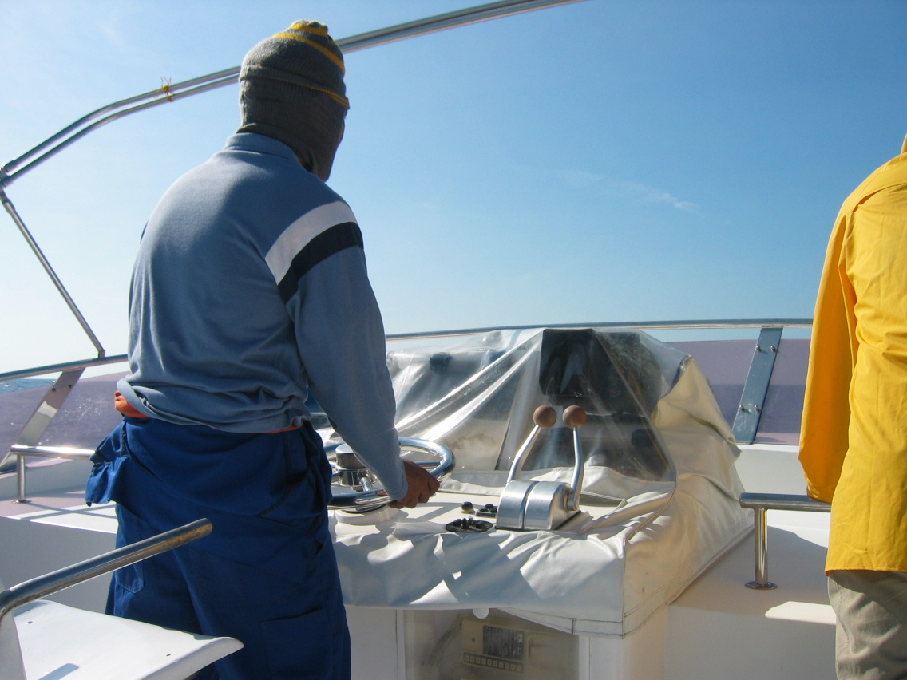 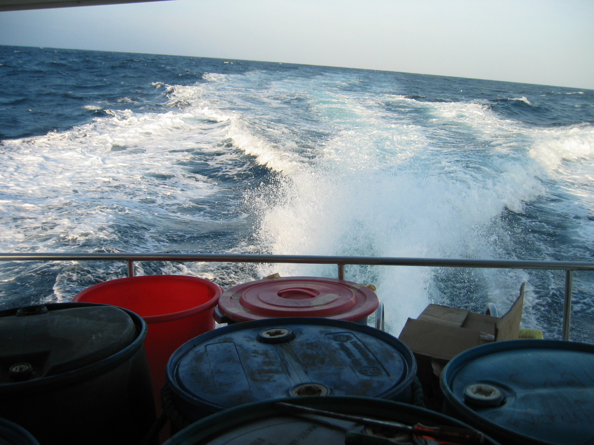 船尾に予備の燃料を満載してボートは高速で目的地を目指す KARL LANCE STEPHEN号の操船は"完全装備"で昼夜、最上階のデッキで行う [Spratly(Pag-Asa)Isに上陸] 2/3日の朝、予定した到着時間の0800時から遅れること4時間後の1200時少し前に、船はようやくSpratly(Pag-Asa)島に接近した。 しかし、この島には船を横付けする港(桟橋)は無い。 最も海岸に接近できる北側のリーフの入り口付近には、真赤に錆び付いたフィリピン軍の大型補給船が座礁して進入口付近を塞いでいる。 冬のこの季節は北西からの風を受け、北側の海岸は波のうねりも高いため、島に接近するのは危険と判断、やむなく島の南側に船を向けた。 1430時頃、船は南側のリーフから200mほど離れた場所に2本の錨を下ろした。 ここから全長3.5mほどの備え付けのゴムボートで人員、機材をリーフ越へで浜辺に陸揚げする事になった。 島の北側に比べ風による波のうねりは少ないとはいえ、小さなゴムボート一隻でメンバーや機材の陸揚げは、 短時間では困難に思われた。 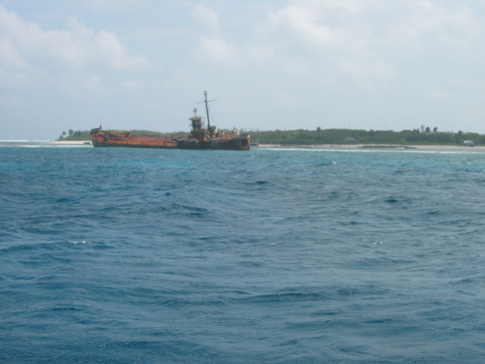 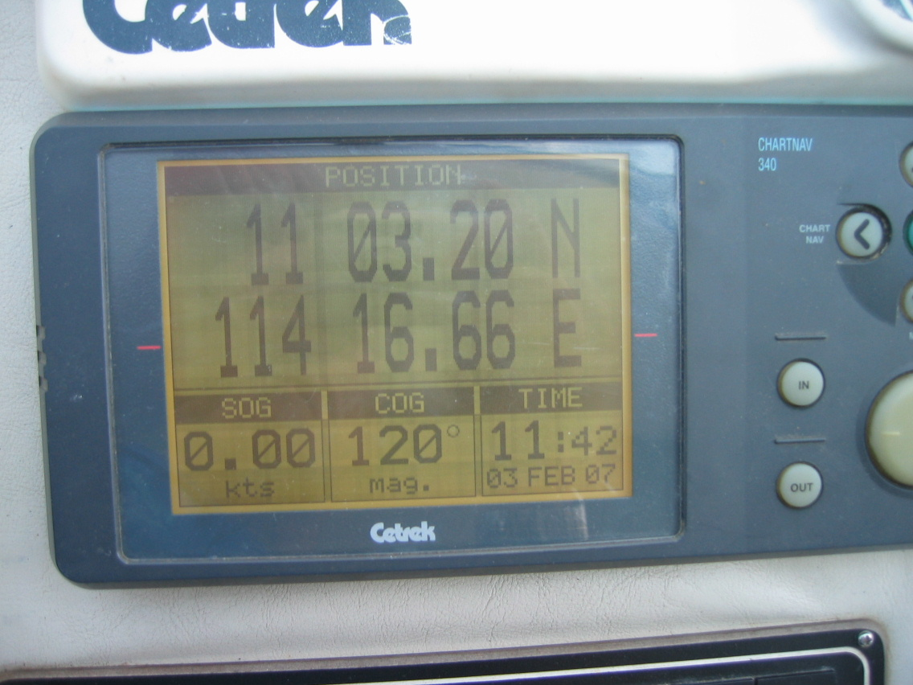 Spratly(Pag-Asa)島に接近/備え付けのGPSに表示された島の位置 1450時、最初のボートで船長とDX-PeditionのリーダーJA1BRK(Tac)、水先案内人・Camo氏、通訳役のDU1BA(Jun)が乗り込み島へ向けて出発した。 船から離れた小さなボートは木の葉の様に大きく揺れながら浜辺に向かって進んでいった。 約10分後、船から1Kmほど離れた砂浜にボートが無事到着するのが見え、ひとまずホッとした。 Spratly(Pag-Asa)Isに第一歩を印したのは、マニラを出発してから実に2日半、約62時間後の上陸だった。 日が暮れるまでの間、メンバーと機材をゴムボート１隻ながらピストン輸送で浜まで運ぶ作業が進められた。 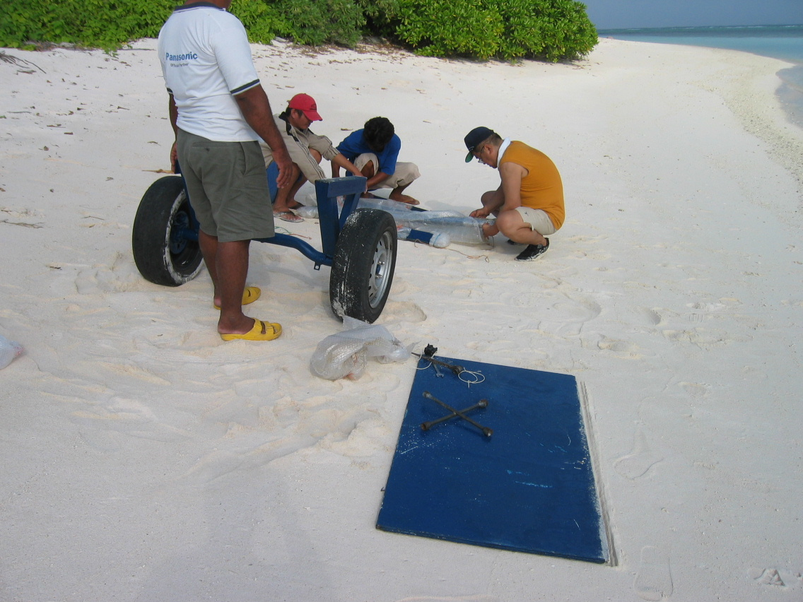 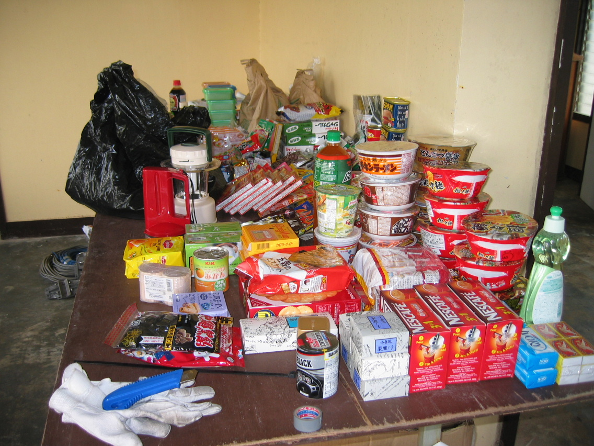 上陸した海岸から機材を運用場所まで運搬する"特製リヤカー"も組み立てられた 持ち込んだ全メンバーの食材。最終日にはこれもほとんど底をついた。 JA4DND自家製の"こしひかり"は持参した炊飯器で炊かれた。 2/4日は、早朝から昨日陸揚げされた機材を整理、まだ暗い内からメンバー全員でアンテナ工事に取り掛かった。 40mの4SQが第1サイトの目の前の飛行場の脇の空き地に、第1サイトからほど近い高さ30mほどの灯台の上にはHF帯の4ELビームが上がった。 これで第1サイトからの運用は一部可能となり、メンバーが交代で一波だけの運用を開始した。 残るメンバーは引き続き、残るアンテナ建てに汗を流した。 ローバンド専用の第2サイトには80mの4Square、160mの2 Elements phased array verticalなどのローバンドアンテナ、 が次々と建てられた。第1サイト玄関前の"国旗掲揚"用のポールを利用して50MHzのEME用のアンテナも上げられ、 4日夜から本格的に50MHzのEMEの運用も始まった。 タワーの陸揚げが遅れていた144MHzのEME用の13elX2も翌日(2/5日)に上がった。 機材のほとんどが陸揚げされたのは2/5日。 2/6日に全てのアンテナが揃いメンバー全員による本格的な運用が始まった。 第1サイトでは40m以上のHF帯とWARCバンドと50MHz、144MHzのEMEの運用が行われた。 第1サイトから北側に数100m離れた海岸線に設置された第2サイトでは160m〜80mのローバンドが専用に運用された。 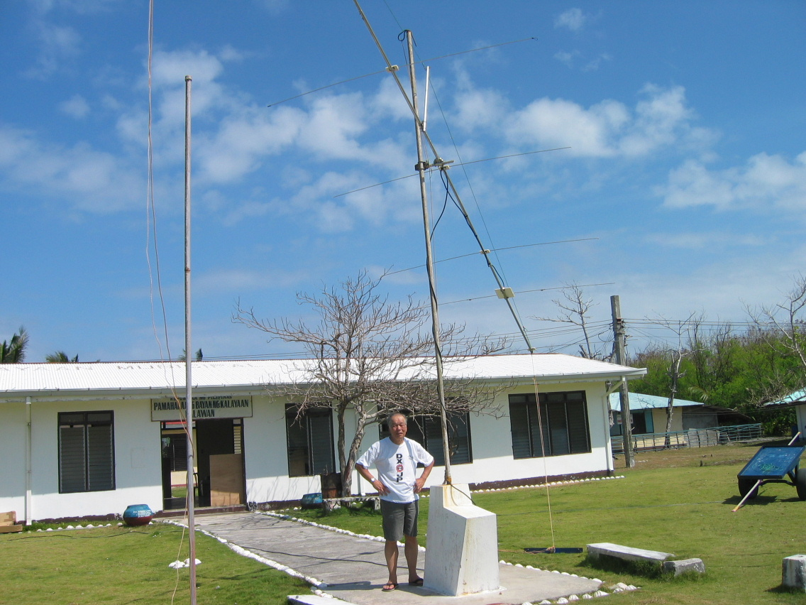 2/4日から2/9日の1130時まで運用されたDX0JPの6m EME用の7el Long Boom (7el Long BoomはJK7TKE・福井さんデザインの移動用アンテナ) (7 element Long boom yagi designed by JK7TKE) 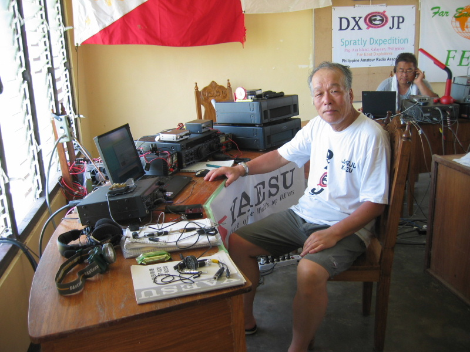 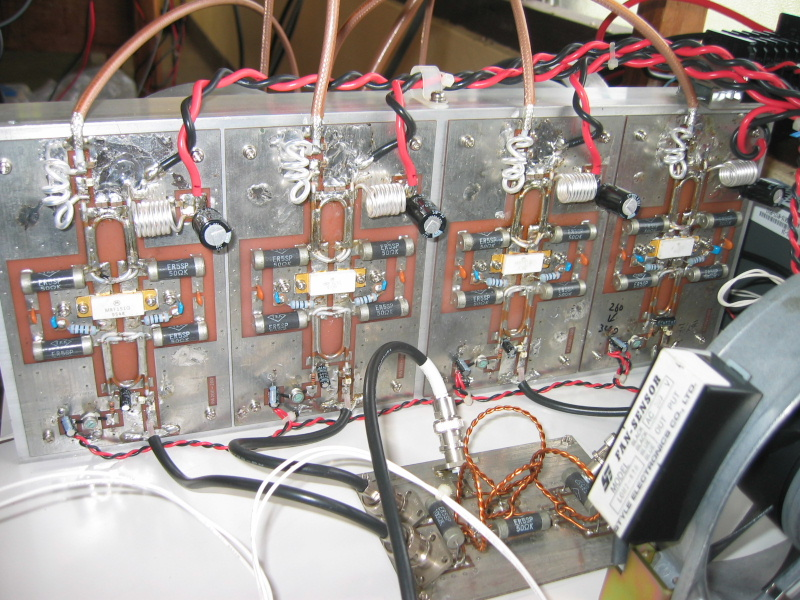 第一サイトの50MHz、144MHzのEMEデスクでJA1RJU(Kazu) 144MHz帯EME用の800W(200WX4)リニアー・アンプ。4個の大型FANが回る 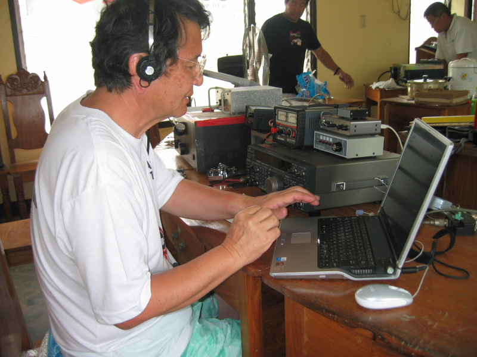 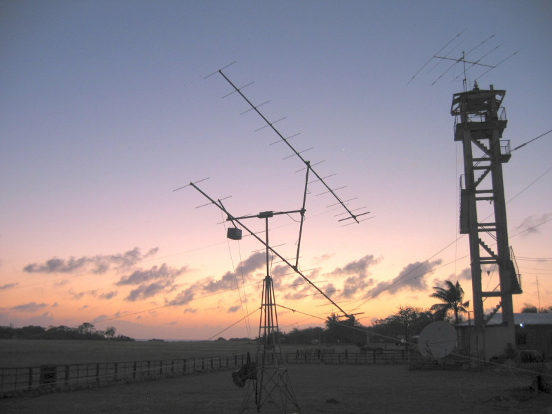 HF帯で初運用するJA1BRK(Tac) 144MHzのEME用アンテナ(クリエート製13ELX2) 右のタワーはSpratly島の灯台。この上に4バンドのHFアンテナが見える。 [運用終了と撤収] 全ての機材は大きなトラブルも無く良く働いてくれた。3台のHONDAのジェネレーター(発電機)も快調に回った。 運用最終日の2/11日の早朝、持ち込んだドラム缶2本のガソリン燃料も切れ、ジェネレーターは明け方近くに停止した。 この時間がDX0JPの運用が終了した瞬間だった。 帰路は2/12日までに往路で給油したパラワン(Palawan)島のリミナンコン(Liminancong)に到着する日程が組まれていたため、 逆算すると2/11日の午前中にSpratly Island(Pag-Asa Is)島を離れる必要があった。 メンバーはリミナンコン港で下船、約2時間の山道を車で空港のある島の北端のエル・ニド(EL NIDO)まで移動し、 翌日午後発のマニラ行きの便に間に合わせなければ、一週間ここで足止めされてしまう恐れもあるのだ。 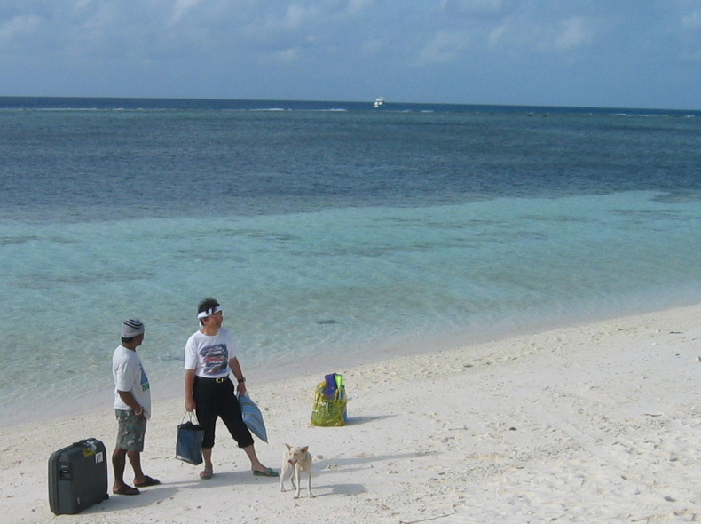 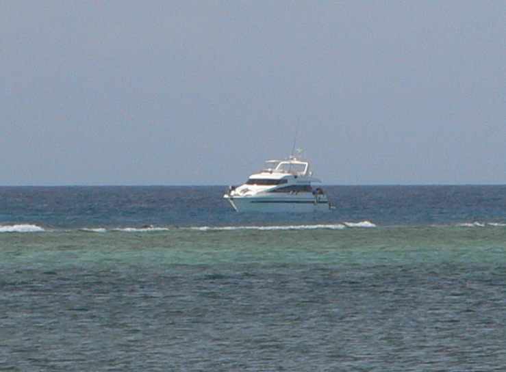 海岸で撤収のボートを待つJA1BRK。リーフの外に本船が見える。 われわれをSpratly Islandまで運んでくれたKARL LANCE STEPHEN号 2/11日の昼過ぎには引き潮になりボートがリーフを越えられず本船に戻る事が出来なくなるため、 午前中の撤収がタイムリミットだった。 早朝には既に"電波は止って"いたため、足元が明るくなるのを待って大急ぎでHF帯のアンテナの撤収が始まった。 EME関係のアンテナは一足早く、2/9日の月の入り(午前1130時)を最後にQRT、既にアンテナは撤去されていた。 島から持ち帰る機材は無線機関係と個人の身の周り品などの"貴重品"だけとし、アンテナ関係の長物機材やケーブルは全て島に"寄贈"する事に決まった。 半分以下に減った荷物は徐々に本船に送り返された。 144MHzのEME用のアンテナもタワーと共に島に残された。 ハムが居ないこの島では"無用の長物"と思われるが"中国のテレビが写るかも..."と置いてきた。 ローバンドのアンテナで活躍したグラスファイバーのポール10本は、 われわれの撤収と共に倒され、住民の"釣竿"として活躍しているはず。 1100時には機材、メンバー全員は無事に本船に帰還、リミナンコン港に向け出発した。 いよいよ最後の難関、Spratly Island(Pag-Asa Is)からリミナンコン港まで再び25時間を超える往路と同じ"苦痛の船旅"が始まる。 メンバーのほとんどは船酔いに備えてこの日の朝食は取らなかった。リミナンコン港に到着するまで...26時間余の絶食！。 DX0JPの電波は停止しても、われわれの"DX-Pedition"は全員が無事に帰国するまでまだ続いている...。 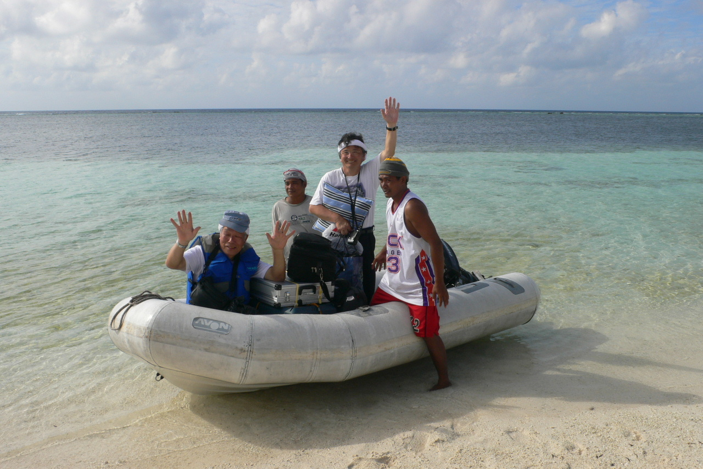 ゴムボートでSpratly Islandから撤退するJA1BRK,JA1RJU(左) DX0JPの運用LOGは2/13日夜、マニラに戻ってから集計された。 結果はHF帯で約14.000 QSO、EMEは62(6m=8、2m=54)QSOだった。 詳細はDX0JPのWeb(ログサーチ有り)を参照。DX0JP DX-Pedition 現地では昼間は電気の供給は止まり(夜間は太陽電池の蓄電のみ)、衛星を使った携帯電話も故障していて使えずインターネット環境からは完全に隔離されていた。 当てにしていたクラスターはもちろん、メールも使えないためEMEではスケジュールの変更の連絡もアマチュア無線経由以外では出来ない状態だった。 クラスターが使える環境があれば、EMEのQSO数は確実に倍増？していたと思われる。 悪環境下の運用ながら初期の目的だったローバンドでの北米東部、ヨーロッパとのQSOやEMEでの初の"NEW"をサービス出来たことは満足出来るものだった。 最後にわれわれの運用を援助してくれた各局、週末の運用が少なかったにも関わらず各バンドで呼んでくれた多くの皆さんに感謝します。 (JA1RJU / DX0JP・小笠原) |
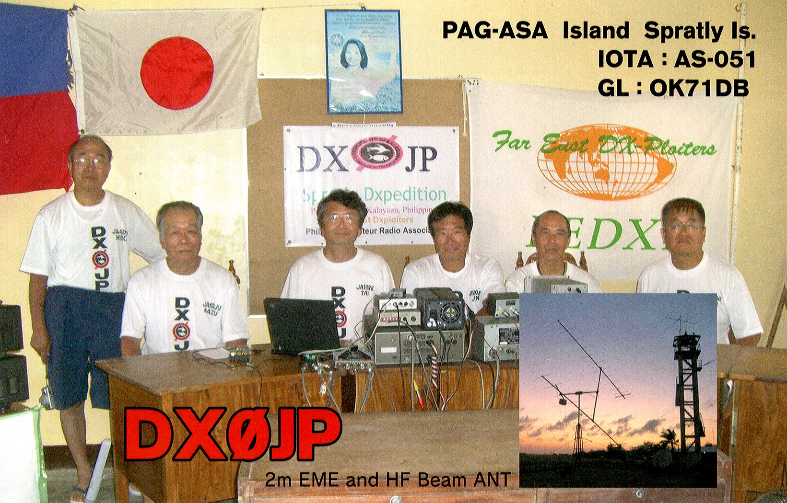
◎ Final total of stations worked on 50/144MHz EME (DX0JP=OP.JA1RJU)
Feb.04 6m=W7GJ.KC4PX.SM7FJE.SM7BAE.PE1BTX.
2m=non
Feb.05 6m=K7AD
2m=K6MYC.DL8GP.EA6VQ.PA2CHR.HB9Q.OZ1LPR.RN6BN.RA6AX.PA3CMC.F1DUZ.PA3FPQ
Feb.06 6m=K6MYC.N5BLZ
2m=DF2ZC.SP6GWB.KB8RQ.W5UN.AA9MY.WQ5S.AA7A.W7GJ.JH0MHE.JH2COZ.RA3AQ.SV8CS
RU1AA.EA2AGZ.EA3DXU.CT1HZE.RX1AS.*HB9Q.SM7BAE.DL8YHR.RA6DA.DL9MS.S52LM
I2RV.SM5CUI.I1ANP.F8DO.PA1T.IK1UWL.DJ7OF
Feb.07 6m=non
2m=PE1L.F6HVK.
Feb.08 6m=non
2m=G4FUF.YO9FRJ.*EA3DXU.YU7AA.JH5FOQ
Feb.09 6m=non
2m=RA0ZH.DK3EE.DK0VHF.DK3T.UA9FAD.RN6MT
※ QSO not completed-one way.
6m=W1JJ.IW5DHN.PA2V.KJ9I.JH2COZ.JR6EXN
2m=DL7FF.OH7PI
(EME QRT=Feb.09/02:50z)
|